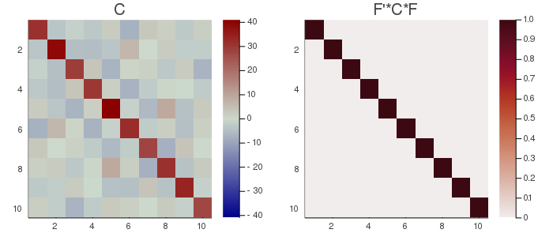

Whitening
Whitening (also named Sphering) is a standardized version of PCA. Possibly it is the most used diagonalization procedure among all. Like PCA, it corresponds to the situation $m=1$ (one dataset) and $k=1$ (one observation).
Let $X$ be a $n‚ãÖt$ data matrix, where $n$ is the number of variables and $t$ the number of samples and let $C$ be its $n‚ãÖn$ covariance matrix. Being $C$ a positive semi-definite matrix, its eigenvector matrix $U$ diagonalizes $C$ by rotation, as
$U^{H}CU=Λ$. $\hspace{1cm}$ [whitening.1]
The eigenvalues in the diagonal matrix $Λ$ are all non-negative. They are all real and positive if $C$ is positive definite, which is assumed in the remaining of this exposition. The linear transformation $Λ^{-1/2}U^{H}X$ yields uncorrelated data with unit variance at all $n$ components, that is,
$\frac{1}{T}Λ^{-1/2}U^{H}XX^{H}UΛ^{-1/2}=I$. $\hspace{1cm}$ [whitening.2]
Whitened data remains whitened after whatever further rotation. That is, for any orthogonal matrix $V$, it holds
$V^H\big(\frac{1}{T}Λ^{-1/2}U^{H}XX^{H}UΛ^{-1/2}\big)V=I$. $\hspace{1cm}$ [whitening.3]
Hence there exist an infinite number of possible whitening matrices with general form $V^HΛ^{-1/2}U^{H}$. Because of this property whitening plays a fundamental role as a first step in many two-steps diagonalization procedures (e.g., for the CSP, CSTP and CCA). Particularly important among the infinite family of whitening matrices is the only symmetric one (or Hermitian, if complex), which is the inverse of the principal square root of $C$ and is found repeatedly in computations on the manifold of positive definite matrices (see for example intro to Riemannian geometry).
For setting the subspace dimension $p$ manually, set the eVar optional keyword argument of the Whitening constructors either to an integer or to a real number, this latter establishing $p$ in conjunction with argument eVarMeth using the arev vector, which is defined as for the PCA filter, see Eq. [pca.6] therein and subspace dimension for details. By default, eVar is set to 0.999.
Solution
As for PCA, the solution is given by the eigenvalue-eigenvector decoposition of $C$
$\textrm{EVD}(C)=UΛU^{H}$.
Constructors
Three constructors are available (see here below), which use exactly the same syntax as for PCA. The constructed LinearFilter object holding the Whitening will have fields:
.F: matrix $\widetilde{U}\widetilde{Λ}^{-1/2}$ with scaled orthonormal columns, where $\widetilde{Λ}$ is the leading $p⋅p$ block of $Λ$ and $\widetilde{U}=[u_1 \ldots u_p]$ holds the first $p$ eigenvectors in $U$. If $p=n$, .F is just $UΛ^{-1/2}$.
.iF: $\widetilde{Λ}^{1/2}\widetilde{U}^H$, the left-inverse of .F.
.D: $\widetilde{Λ}$, i.e., the eigenvalues associated to .F in diagonal form.
.eVar: the explained variance for the chosen value of $p$. This is the same as for the PCA, see Eq. [pca.4] therein.
.ev: the vector diag(Λ) holding all $n$ eigenvalues.
.arev: the accumulated regularized eigenvalues. This is the same as for the PCA, see Eq. [pca.6] therein.
Diagonalizations.whitening — Function(1)
function whitening(C :: SorH;
eVar :: TeVaro=○,
eVarMeth :: Function=searchsortedfirst,
simple :: Bool=false)
(2)
function whitening(X::Mat;
covEst :: StatsBase.CovarianceEstimator = SCM,
dims :: Into = ○,
meanX :: Tmean = 0,
wX :: Tw = ○,
eVar :: TeVaro = ○,
eVarMeth :: Function = searchsortedfirst,
simple :: Bool = false)
(3)
function whitening(ùêó::VecMat;
covEst :: StatsBase.CovarianceEstimator = SCM,
dims :: Into = ○,
meanX :: Into = 0,
eVar :: TeVaro = ○,
eVarMeth :: Function = searchsortedfirst,
simple :: Bool = false,
metric :: Metric = Euclidean,
w :: Vector = [],
✓w :: Bool = true,
init :: SorHo = nothing,
tol :: Real = 0.,
verbose :: Bool = false)
Return a LinearFilter object:
(1) Whitening with real or complex covariance matrix C as input.
C must be flagged as Symmetric, if real or Hermitian, if real or complex, see data input.
eVar and evarMeth are keyword optional arguments for defining the subspace dimension $p$ using the .arev vector given by Eq. [pca.6], see PCA. The default values are:
eVar=0.999evarMeth=searchsortedfirst
If simple is set to true, $p$ is set equal to $n$ and only the fields .F and .iF are written in the constructed object. This option is provided for low-level work when you don't need to define a subspace dimension or you want to define it by your own methods.
(2) Whitening with a real or complex data matrix X as input.
CovEst, dims, meanX, wX are optional keyword arguments to regulate the estimation of the covariance matrix of X. See covariance matrix estimations.
Once the covariance matrix estimated, method (1) is invoked with optional keyword arguments eVar, eVarMeth and simple.
(3) Whitening with a vector of real or complex data matrices ùêó as input.
CovEst, dims and meanX are optional keyword arguments to regulate the estimation of the covariance matrices for all data matrices in ùêó. See covariance matrix estimations.
A mean of these covariance matrices is computed using optional keywords arguments metric, w, ✓w, init, tol and verbose. See mean covariance matrix estimations. By default, the arithmetic mean is computed.
Once the mean covariance matrix estimated, method (1) is invoked with optional keyword arguments eVar, eVarMeth and simple.
Examples:
using Diagonalizations, LinearAlgebra, PosDefManifold, Test
# Method (1) real
n, t=10, 100
X=genDataMatrix(n, t)
C=(X*X')/t
wC=whitening(Hermitian(C); simple=true)
# or, shortly
wC=whitening(ℍ(C); simple=true)
# Method (1) complex
Xc=genDataMatrix(ComplexF64, n, t)
Cc=(Xc*Xc')/t
wCc=whitening(Hermitian(Cc); simple=true)
# Method (2) real
wX=whitening(X; simple=true)
@test wC.F'*C*wC.F≈I
@test wX.F'*C*wX.F≈I
@test wX≈wC
# Method (2) complex
wXc=whitening(Xc; simple=true)
@test wCc.F'*Cc*wCc.F≈I
@test wXc.F'*Cc*wXc.F≈I
@test wXc≈wCc
# Method (3) real
k=10
Xset=[genDataMatrix(n, t) for i=1:k]
# whitening on the average covariance matrix
w=whitening(Xset)
# ... selecting subspace dimension allowing an explained variance = 0.5
w=whitening(Xset; eVar=0.5)
# ... averaging the covariance matrices using the logEuclidean metric
w=whitening(Xset; metric=logEuclidean, eVar=0.5)
# ... giving weights `w` to the covariance matrices
w=whitening(Xset; metric=logEuclidean, w=abs2.(randn(k)), eVar=0.5)
# ... subtracting the mean
w=whitening(Xset; meanX=nothing, metric=logEuclidean, w=abs2.(randn(k)), eVar=0.5)
# whitening on the average of the covariance matrices computed along dims 1
w=whitening(Xset; dims=1)
# explained variance
w.eVar
# name of the filter
w.name
using Plots
# plot regularized accumulated eigenvalues
plot(w.arev)
# plot the original covariance matrix and the whitened covariance matrix
Cmax=maximum(abs.(C));
h1 = heatmap(C, clim=(-Cmax, Cmax), yflip=true, c=:bluesreds, title="C");
D=wC.F'*C*wC.F;
h2 = heatmap(D, clim=(0, 1), yflip=true, c=:amp, title="F'*C*F");
üìà=plot(h1, h2, size=(700, 300))
# savefig(üìà, homedir()*"\Documents\Code\julia\Diagonalizations\docs\src\assets\FigWhitening.png")
# Method (3) complex
k=10
Xcset=[genDataMatrix(ComplexF64, n, t) for i=1:k]
# whitening on the average covariance matrix
wc=whitening(Xcset)
# ... selecting subspace dimension allowing an explained variance = 0.5
wc=whitening(Xcset; eVar=0.5)
# ... averaging the covariance matrices using the logEuclidean metric
wc=whitening(Xcset; metric=logEuclidean, eVar=0.5)
# ... giving weights `w` to the covariance matrices
wc=whitening(Xset; metric=logEuclidean, w=abs2.(randn(k)), eVar=0.5)
# ... subtracting the mean
wc=whitening(Xcset; meanX=nothing, metric=logEuclidean, w=abs2.(randn(k)), eVar=0.5)
# whitening on the average of the covariance matrices computed along dims 1
wc=whitening(Xcset; dims=1)
# explained variance
wc.eVar
# name of the filter
wc.name